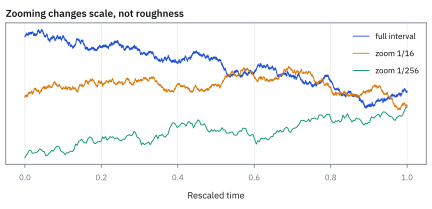
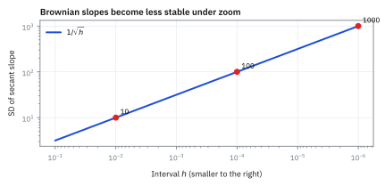
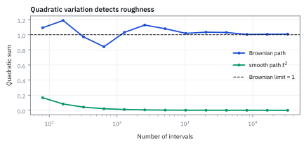

10.5 Strange Properties of Brownian Paths
เส้นทางที่ดูเรียบในทุกช่วงสั้น ๆ กลับมีนิสัยประหลาดเมื่อซูม
ลากเส้นภูเขาด้วยดินสอบนกระดาษ แล้วซูมเข้าเส้นเดิมซ้ำ ๆ ถ้าเส้นดูเรียบจากไกล คุณคาดว่าจะวางไม้บรรทัดสัมผัสทุกจุดได้ไหม?
เฉลย: ไม่ได้; แบ่งช่วงเวลาเป็น 100 ชิ้นแล้วบวกการขยับกำลังสอง แม้การขยับสุทธิล้างกัน ผลรวมนี้ไม่หายไปและเข้าใกล้เวลาที่ผ่าน
Quadratic variation คือผลรวมของ increment ยกกำลังสองเมื่อแบ่งเวลาให้ถี่ขึ้น เส้น Brownian ดูสุภาพเมื่อมองไกล แต่พอซูมไม่ยอมให้จับมือด้วย tangent; จึงต้องใช้ stochastic calculus
ศัพท์ที่ใช้ในหัวข้อนี้
- self-similarity
- คุณสมบัติที่ process หลัง rescale เวลาและขนาดอย่างถูกต้องมี distribution เดิม ใช้อธิบายว่าทำไม Brownian charts ต่าง horizons ดูคล้ายกัน
- nowhere differentiable
- คุณสมบัติที่แทบทุก sample path ไม่มี derivative ณ เวลาใดเลย ใช้เตือนว่าความเร็วทันทีของ Brownian price ไม่มีนิยามแบบ calculus ปกติ
- quadratic variation
- limit ของผลรวม squared increments เมื่อ mesh ละเอียดขึ้น ใช้วัด roughness ของ path และเป็นฐานของ stochastic calculus กับ realized variance
- partition
- ชุดเวลาที่เรียงกันและแบ่ง horizon เป็นช่วงย่อย ใช้สร้าง increments สำหรับนิยาม variation และ numerical sampling
- mesh
- ความยาวของช่วงย่อยที่กว้างที่สุดใน partition ใช้บอกระดับความละเอียดและกำหนด limit เมื่อ mesh เข้าใกล้ 0
- Realized Variance (RV)
- ผลรวม squared intraday log returns ตลอดช่วงวัด ใช้ประมาณ integrated variance ที่เกิดขึ้นจริงจากข้อมูลราคา
- Standard Brownian Motion (SBM)
- Brownian motion ที่เริ่มจาก 0 ไม่มี drift และมี variance เท่ากับเวลา ใช้เป็นกรณีฐานของ scaling และ quadratic variation
- realized volatility
- square root ของ realized variance หลังปรับหน่วยเวลา ใช้รายงานขนาดการแกว่งที่เกิดขึ้นจริงให้เทียบกับ implied หรือ forecast volatility
- integrated variance
- integral ของ instantaneous variance ตลอดเวลา ใช้เป็นเป้าหมายประชากรที่ realized variance ประมาณเมื่อ volatility เปลี่ยนตามเวลา
- market microstructure noise
- ความคลาดเคลื่อนระยะสั้นจาก bid-ask bounce, price discreteness และกลไกการซื้อขาย ใช้เตือนว่าการ sample ถี่เกินไปอาจดัน realized variance สูงเกินจริง
- bid
-
คืออะไร: ราคาสูงสุดที่มีคนพร้อมรับซื้ออยู่ในขณะนั้น
ใช้ทำอะไร: ใช้เป็นหนึ่งในสองราคาที่ทำให้ราคาซื้อขายจริงเด้งไปมา
ทำไมถึงเกี่ยวกับหัวข้อนี้: เพราะการเด้งนี้ทำให้ข้อมูลความถี่สูงดูขรุขระกว่าความจริง และความขรุขระปลอมนั้นถูกนับรวมเป็นความเหวี่ยงโดยที่ไม่ใช่
- ask
-
คืออะไร: ราคาต่ำสุดที่มีคนพร้อมขายอยู่ในขณะนั้น
ใช้ทำอะไร: เป็นอีกฝั่งของการเด้งข้างต้น
ทำไมต้องแยกกัน: เพราะรายการที่เกิดขึ้นจริงจะกระโดดสลับระหว่างสองราคานี้ แม้ในนาทีที่ไม่มีข่าวและไม่มีใครเปลี่ยนใจเรื่องมูลค่าเลย
- bid-ask spread
-
คืออะไร: ผลต่างระหว่างสองราคาข้างบน
ใช้ทำอะไร: ใช้ประเมินว่าความขรุขระปลอมในข้อมูลใหญ่แค่ไหน
ทำไมต้องรู้ขนาดของมัน: เพราะมันกำหนดว่าเราวัดถี่ได้แค่ไหนก่อนที่ตัวเลขจะเสีย การวัดทุกวินาทีบนหุ้นที่ช่องว่างกว้าง ให้ตัวเลขที่สูงเกินจริงหลายเท่า
- recurrence
- คุณสมบัติที่ one-dimensional Brownian motion กลับมาเยือนระดับต่าง ๆ ซ้ำด้วย probability 1 ใช้อธิบายการ hit เป้าหมายในที่สุดโดยไม่สร้าง finite expected waiting time จากจุดเริ่มที่ห่างเป้าหมาย
- Itô's lemma
- กฎ chain rule สำหรับ function ของ stochastic process ที่เก็บ quadratic-variation term ไว้ ใช้ derive dynamics และราคา ซึ่งจะสร้างเต็มในหัวข้อ 12.2
สัญลักษณ์ที่ใช้ในหัวข้อนี้
| สัญลักษณ์ | ความหมาย | หน่วย |
|---|---|---|
| $W_t$ | SBM ที่เวลา $t$ | $\sqrt{\mathrm{time}}$ |
| $c$ | positive factor สำหรับ rescale เวลา | ไม่มีหน่วย |
| $h$ | ช่วงเวลาสั้นที่ใช้สร้าง secant slope | เวลา |
| $\Pi_n$ | partition $0=t_0 \lt \cdots \lt t_n=T$ | ชุดเวลา |
| $|\Pi_n|$ | mesh หรือช่วงย่อยที่ยาวที่สุดใน partition | เวลา |
| $Q_n(T)$ | ผลรวม squared Brownian increments บน partition | เวลา |
| $r_i$ | intraday log return ช่วงที่ $i$ | decimal return |
| $RV$ | realized variance จากผลรวม $r_i^2$ | return squared |
| $\sigma_t$ | instantaneous volatility ของ log price | ต่อ $\sqrt{\mathrm{year}}$ |
| $X_t$ | Brownian motion $x+W_t$ ที่เริ่มจากค่า $x\ne0$ | หน่วยของ process |
| $\tau_0$ | first hitting time ที่ $X_t$ แตะระดับ 0 | เวลา |
ที่มาที่ไป: เส้นที่ซูมเข้าไปเท่าไรก็ไม่เจอส่วนที่เรียบ
เมื่อยอมรับว่าราคาเดินแบบสุ่มต่อเนื่องแล้ว คำถามถัดมาคือเราใช้เครื่องมือคำนวณเดิมกับมันได้ไหม
คำตอบคือไม่ได้ และเหตุผลอยู่ที่นิสัยประหลาดของเส้นทางแบบนี้ คือมันไม่มีความชัน ซูมเข้าไปเท่าไรก็ยังขรุขระเหมือนเดิม ไม่เคยกลายเป็นเส้นตรงเหมือนเส้นโค้งทั่วไป
แต่ในความขรุขระนั้นมีสิ่งที่นิ่งอย่างน่าประหลาด คือผลรวมของการขยับยกกำลังสอง ซึ่งลู่เข้าหาความยาวของช่วงเวลาพอดี ไม่ว่าจะซอยละเอียดแค่ไหน
ปริมาณที่นิ่งตัวนี้เองที่กลายเป็นฐานของทั้ง calculus ชุดใหม่ในบทที่ 12 และเป็นฐานของการวัดความผันผวนจากข้อมูลจริงที่โต๊ะใช้ทุกวัน
ประวัติความเป็นมา: จาก function ปีศาจของ Weierstrass สู่มิติ fractal ของ Mandelbrot
ในศตวรรษที่ 19 นักคณิตศาสตร์ส่วนใหญ่เชื่อว่า function ที่ต่อเนื่องทุกจุด จะต้องหา derivative ได้เกือบทุกจุด แต่ในปี 1872 Karl Weierstrass ได้สร้างตัวอย่างค้านที่สร้างความตกตะลึง คือ function ที่ต่อเนื่องทุกจุดแต่หา derivative ไม่ได้เลยแม้แต่จุดเดียว ในเวลานั้นนักคณิตศาสตร์หลายคนอย่าง Charles Hermite ถึงกับเรียกมันว่าเป็น สิ่งน่ารังเกียจ และเป็นเพียงจินตนาการทางทฤษฎีที่ไม่มีวันพบในธรรมชาติ
แต่เมื่อ Norbert Wiener สร้างmodel Brownian motion ทางคณิตศาสตร์ในปี 1923 และร่วมกับ Raymond Paley และ Antoni Zygmund พิสูจน์ในปี 1933 พวกเขาพบความจริงที่น่าตกใจยิ่งกว่า: เส้นทาง Brownian แทบทุกเส้นทาง มีสมบัติแบบเดียวกับ function ของ Weierstrass ทุกประการ นั่นคือ ต่อเนื่องทุกจุดแต่หา derivative ไม่ได้เลยสักจุดเดียว สิ่งที่เคยถูกมองว่าเป็นสัตว์ประหลาดทางคณิตศาสตร์ กลับกลายเป็นกฎธรรมชาติของอนุภาคที่สุ่มชนกัน
ต่อมาในทศวรรษ 1970 Benoit Mandelbrot ได้เชื่อมโยงเส้นทางเหล่านี้เข้ากับแนวคิด fractal และแสดงว่า sample path ของ Brownian motion มีมิติแบบ Hausdorff เท่ากับ 1.5 ซึ่งอยู่กึ่งกลางระหว่างเส้นหนึ่งมิติกับพื้นผิวสองมิติ ความยุ่งเหยิงที่ไม่มีวันเรียบนี้เองที่บีบให้นักคณิตศาสตร์ชาวญี่ปุ่น Kiyosi Itô ต้องคิดค้น stochastic calculus ขึ้นมาใหม่ เพื่อรับมือกับโลกที่ $(dW_t)^2 = dt$
self-similarity ทำให้ pattern เกิดได้ทุก scale
ขยายเวลา $c$ เท่าแล้วหารแกนตั้งด้วย $\sqrt c$ จะได้ process ที่มี distribution เดิม ประโยคนี้พูดถึง distribution ของทั้ง process ไม่ได้บอกว่าช่วงซูมของ path เส้นเดิมเป็นสำเนากันทุก pixel
ขั้นที่ 1 — Brownian scaling law
นิสัยประหลาดทั้งหมดในหัวข้อนี้สืบมาจากกฎข้อเดียว คือย่อขยายเวลาแล้วเส้นทางหน้าตาเหมือนเดิม ถ้าปรับแกนตั้งด้วยรากของตัวย่อขยาย ซูมเข้าไปเท่าไรก็ไม่เจอส่วนที่เรียบ
$c$ ขยายเวลาและ $c^{-1/2}$ หด amplitude; equality in distribution หมายถึง joint distributions ที่เวลาใด ๆ ตรงกัน ไม่ใช่ pathwise equality
แล้วเอาไปใช้ทำอะไรได้จริงบ้าง
นิสัยประหลาดของเส้นทางสุ่ม อธิบายว่าทำไมเครื่องมือคณิตศาสตร์เดิมถึงใช้ไม่ได้
ใช้เป็นฐานของการวัดความผันผวนจากข้อมูลความถี่สูง ซึ่งเป็นวิธีที่แม่นที่สุดที่มีอยู่
ใช้อธิบายว่าทำไมการ hedge ต้องปรับบ่อย และทำไมยิ่งปรับบ่อยยิ่งดีในทางทฤษฎี
ใช้เตือนเรื่องกลยุทธ์รอให้ราคากลับมา เพราะแม้จะกลับมาแน่นอน แต่เวลารอเฉลี่ยไม่มีค่าจำกัด
Figure 10.5a — nested zooms retain Brownian roughness

ช่วงเต็ม, 1/16 แรก และ 1/256 แรกถูก rescale ให้ยาวเท่ากันแล้ววางซ้อนคนละระดับ ทั้งสามยังหยักคล้ายกัน; random seed ก็วาด chart pattern ได้ แต่ยังไม่มีสิทธิ์ส่ง order
path ต่อเนื่องไม่ได้แปลว่ามี derivative
secant slope บนช่วง $h$ ใช้ Brownian increment ส่วนด้วยเวลา increment มี standard deviation $\sqrt h$ จึงทำให้ scale ของ slope โตเมื่อช่วงหดลง
ขั้นที่ 2 — distribution ของ secant slope
ลองวัดความชันแบบที่เรียนใน calculus คือหารการขยับด้วยช่วงเวลา หกบรรทัดนี้แสดงว่ายิ่งซูมยิ่งพัง ไม่ใช่ยิ่งซูมยิ่งนิ่ง และนั่นคือเหตุผลทั้งหมดที่บทถัดไปต้องสร้างเครื่องมือคำนวณชุดใหม่
ถามคำถามของ calculus ตรง ๆ กับเส้นทางนี้ ความชันระหว่างเวลาสองเวลาที่อยู่ติดกันเป็นเท่าไร เมื่อระยะห่างหดลงเรื่อย ๆ เอา increment ส่วนด้วยช่วงเวลา ตัวหารเป็นค่าคงที่จึงออกมาเป็นกำลังสองตามหัวข้อ 6.5 ตัวเศษมี variance เท่ากับ $h$ ตัดทอนแล้วถอดราก
ลองด้วยเลขจริงจะเห็นภาพ ย่นช่วงเหลือหนึ่งในหมื่น ความชันเหวี่ยงระดับร้อย ย่นอีกเหลือหนึ่งในร้อยล้าน เหวี่ยงระดับหมื่น ยิ่งซูมยิ่งบาน ไม่ลู่เข้าหาอะไรเลย
เส้นเรียบทุกเส้นที่เคยเจอทำตรงข้าม คือซูมแล้วความชันนิ่งลงจนกลายเป็นตัวเลขตัวเดียว นั่นคือความหมายของคำว่าหา derivative ไม่ได้ และเป็นเหตุผลที่ต้องมี calculus แบบใหม่ทั้งชุด
ข้อคำนวณนี้เป็น intuition ไม่ใช่ proof เต็ม
variance ของ slopes ที่ระเบิดแสดงว่าการหา derivative แบบ deterministic ไม่น่า converge ส่วนทฤษฎีที่เข้มกว่าพิสูจน์ว่า Brownian path แทบทุกเส้น nowhere differentiable ทุกจุดพร้อมกัน
Figure 10.5b — slope scale explodes as the interval shrinks

ลด $h$ จาก $10^{-2}$ เป็น $10^{-6}$ ทำให้ typical slope scale โตจาก 10 เป็น 1,000 เส้น log-log มี slope -1/2 ตามสูตร ไม่พบความเร็วทันทีที่นิ่งลง
quadratic variation คือ quantity ที่รอดจากการซอย
สำหรับ partition ของ 0 ถึง $T$ ให้บวก squared increments ทุกช่วง เมื่อ mesh เข้าใกล้ 0 ผลรวมไม่หายแบบ smooth path แต่ลู่เข้าเวลาที่ผ่านไป
ขั้นที่ 3 — สี่ก้าวด้วยมือ: ผลรวมล้างกันได้ แต่ผลรวมกำลังสองไม่ล้าง
ก่อนนิยาม ลองเดินสุ่มแบบเหรียญสี่ก้าว แต่ละก้าวขนาด $\sqrt{\Delta t}$ ตามกฎรากที่สอง แล้วบวกสองอย่าง: ก้าวธรรมดา กับก้าวยกกำลังสอง
สามเส้นทางจบคนละที่ (0, 2, 1) เพราะเครื่องหมายบวกลบล้างกันได้ แต่ผลรวมของกำลังสองเท่ากับ 1 ทุกเส้นทาง เพราะกำลังสองลบเครื่องหมายทิ้ง เหลือแต่ขนาด $0.25$ คูณสี่ก้าว $=T$
นี่คือหัวใจของหัวข้อ: ปริมาณที่ *ไม่สุ่ม* บนเส้นทางที่สุ่ม ก้าวจริงของ Brownian ไม่ได้เป็น $\pm0.5$ พอดี แต่มีขนาดเฉลี่ยเท่านี้ ผลรวมกำลังสองจึงเหวี่ยงรอบ $T$ และยิ่งซอยละเอียดยิ่งเหวี่ยงน้อย ซึ่งสองขั้นถัดไปจะพิสูจน์
ขั้นที่ 4 — นิยาม quadratic variation ของ SBM
ความชันใช้ไม่ได้ แต่มีอีกปริมาณที่ใช้ได้ดีมาก คือผลรวมของการขยับยกกำลังสอง ขั้นนี้ตั้งชื่อให้มันก่อนจะพิสูจน์ว่ามันลู่เข้าอะไร
$Q_n(T)$ คือผลรวม squared increments บน deterministic partition $\Pi_n$; เมื่อ mesh ละเอียดขึ้น convergence in mean square บอกว่า mean squared error ของผลรวมจาก $T$ หายไป และ limit เท่ากับ $T$
ทำไม expected sum เท่ากับ $T$ ทุกความละเอียด
increment แต่ละช่วงมี mean 0 และ variance เท่ากับความยาวช่วง ดังนั้น expected square เท่ากับความยาวช่วง แล้ว telescoping ของเวลารวมทุกช่วงเป็น $T$
ขั้นที่ 5 — expected quadratic variation
หาค่าเฉลี่ยของผลรวมนั้นก่อน คำตอบสะอาดมากและไม่ขึ้นกับว่าซอยละเอียดแค่ไหน แต่ค่าเฉลี่ยถูกอย่างเดียวยังไม่พอ ถ้ามันเหวี่ยงมาก ค่าเฉลี่ยก็ไม่มีความหมาย ขั้นถัดไปจึงต้องวัดความเหวี่ยง
ผลรวมกำลังสองของ increment คือของที่เราอยากรู้ เฉลี่ยทีละก้อนด้วยกฎบวกของหัวข้อ 1.3 ซึ่งไม่ต้องขอ independence จากนั้นใช้สูตรลัดของหัวข้อ 1.4 พอค่าเฉลี่ยเป็นศูนย์ ค่าเฉลี่ยของกำลังสองก็คือ variance ซึ่งเท่ากับความยาวช่วงพอดี
ที่เหลือคือบวกความยาวของทุกช่วง พจน์กลางหักกันหมด เหลือหัวลบท้าย ได้ $T$
สิ่งที่น่าทึ่งคือคำตอบไม่มี $n$ อยู่เลย ซอยเป็นสิบช่วงหรือล้านช่วงก็ได้ $T$ เท่ากัน ทั้งที่จำนวนก้อนต่างกันมหาศาล เพราะแต่ละก้อนเล็กลงพอดีกับที่จำนวนก้อนมากขึ้น
ทำไม limit หยุดสุ่มบน equal grid
สำหรับ Gaussian increment ที่มี variance $T/n$ variance ของ squared increment เท่ากับสองเท่าของ variance เดิมกำลังสอง และ squared increments ของช่วงไม่ทับกันอิสระ
ขั้นที่ 6 — variance ของผลรวมลู่เข้า 0
ค่าเฉลี่ยถูกอย่างเดียวยังไม่พอ ต้องดูด้วยว่ามันเหวี่ยงรอบค่าเฉลี่ยแค่ไหน ห้าบรรทัดนี้คำนวณความเหวี่ยงออกมา และคำตอบหดเข้าหาศูนย์ ซึ่งแปลว่าผลรวมกำลังสองไม่ใช่ตัวเลขสุ่ม มันเป็นค่าคงที่ที่รู้ล่วงหน้าได้
ขั้นที่ 5 บอกค่าเฉลี่ย แต่ค่าเฉลี่ยอย่างเดียวไม่พอ ต้องรู้ด้วยว่ามันเหวี่ยงแค่ไหน ซึ่งต้องใช้ค่าเฉลี่ยของกำลังสี่
หาด้วยวิธีเดียวกับที่หัวข้อ 1.9 ใช้หากำลังสอง คืออินทิเกรตทีละส่วน พจน์ขอบเป็นศูนย์เพราะระฆังตายเร็วกว่า $z^{3}$ โต เหลือ integral ที่เป็นค่าเฉลี่ยของกำลังสองซึ่งเป็น 1 จึงได้ 3 เลขตัวนี้คือที่มาของเลข 2 ในบรรทัดถัดไป ไม่ต้องท่อง
จังหวะชี้ขาดอยู่บรรทัดสุดท้าย แต่ละช่วงยาว $T/n$ พอยกกำลังสองจึงได้ $n$ กำลังสองอยู่ข้างล่าง ตัดกับ $n$ ก้อนที่บวกกันได้ไม่หมด เหลือ $n$ คาอยู่ใต้เศษ ผลจึงหดเข้าหาศูนย์
แปลว่าผลรวมกำลังสองแทบไม่สุ่มเลยเมื่อซอยละเอียดพอ ของที่ประกอบจากความสุ่มล้วน ๆ กลับให้ตัวเลขที่เดาได้แน่นอน นั่นคือรากฐานของ Itô calculus ทั้งหมด
ขั้นที่ 7 — นิยามของตัวย่อที่จะใช้ตลอดบทถัดไป
บรรทัดขวาเป็น นิยาม ของตัวย่อ ไม่ใช่สมการพีชคณิตที่พิสูจน์ได้ สิ่งที่พิสูจน์ไปแล้วคือบรรทัดซ้าย คือผลรวมกำลังสองลู่เข้าหา $T$ ส่วนบรรทัดขวาเป็นวิธีจดที่สั้นกว่า สำหรับใช้ในการคำนวณของบทถัดไป อย่าอ่านมันเป็นการคูณของจำนวนเล็กจิ๋วธรรมดา เพราะมันไม่ใช่
$[W]_T$ คือ quadratic variation ของ Brownian path ถึงเวลา $T$; $(dW_t)^2=dt$ เป็น bookkeeping mnemonic สำหรับ limits ใน stochastic calculus ไม่ใช่สมการพีชคณิตของ infinitesimals ธรรมดา
ลูกศรหยักหมายถึง ‘เขียนย่อเป็น’ ไม่ใช่เครื่องหมายเท่ากับ ฝั่งซ้ายคือผลที่พิสูจน์แล้วในขั้นที่ 5 และ 6 ส่วนฝั่งขวาเป็นวิธีจดที่สั้นกว่า สำหรับใช้ในบทถัดไป อย่าอ่านมันเป็นการคูณของจำนวนเล็กจิ๋วธรรมดา
ขั้นที่ 8 — ทำไมกำลังหนึ่งระเบิดเป็นอนันต์: expected total variation
เมื่อกำลังหนึ่งของผลรวมขยายตัวสู่ค่าอนันต์ ขณะที่กำลังสามจะหดตัวเข้าใกล้ศูนย์ กำลังสองจึงเป็นพลังเดียวที่ตรึงให้ผลรวมของความผันผวนลู่เข้าหาตัวเลขจำกัดที่ไม่เป็นศูนย์ ทำให้ quadratic variation กลายเป็นแกนหลักของ stochastic calculus
ถ้าเปลี่ยนจากผลรวมกำลังสองมาเป็นผลรวมความยาวจริง หรือ total variation ก้อน $|\Delta W_i|$ จะมี scale เท่ากับ $\sqrt{\Delta t}$ เสมอ โดยดึงค่าคงที่ $\sqrt{2/\pi}$ ที่คำนวณไว้ในหัวข้อ 10.2 ออกมาได้
เมื่อนำ $n$ ก้าวมาบวกกัน ตัวคูณ $n$ ด้านหน้าส่วนด้วย $\sqrt n$ ในตัวส่วน ไม่ได้ตัดกันหมดเหมือนตอนยกกำลังสอง แต่เหลือ $\sqrt n$ วิ่งขึ้นไปอยู่ข้างบน ทำให้ค่าเฉลี่ยของความยาวเส้นทางโตตามรากของจำนวนช่อง
ลองแทนตัวเลขจริงที่ $T=1$ ซอยร้อยช่องได้ความยาวเฉลี่ยเกือบ 8 ซอยหนึ่งหมื่นช่องทะลุเกือบ 80 ยิ่งวัดละเอียดยิ่งยาวไม่มีที่สิ้นสุด นี่คือหลักฐานว่าเส้นทางนี้ไม่มีความยาวจำกัด และทำให้ calculus แบบเดิมที่ต้องการ bounded variation พังทลายทั้งหมด
Figure 10.5c — only the square lands on a finite nonzero limit

บน nested Brownian path ผลรวม absolute increments โตไม่จำกัด, quadratic sum แกว่งเข้าใกล้ 1 และ cubic absolute sum หายไป; power 2 คือ scale ที่ตรงกับเวลา
smooth path ให้ quadratic variation เป็น 0
ถ้า smooth function มี bounded derivative, increment มี order เท่ากับความยาวช่วง ผลรวม squares จึงลดตาม $1/n$ และหายไป ส่วน Brownian increment มี order เท่ากับ square root ของช่วง จึงเหลือผลรวม order 1
ขั้นที่ 9 — order comparison ของ smooth path กับ Brownian path
เทียบกับเส้นเรียบธรรมดาจะเห็นความต่างชัดที่สุด ของเรียบผลรวมนี้หายไป ของ Brownian ผลรวมนี้ไม่หาย ห้าบรรทัดนี้ชี้ว่าความต่างมาจากบรรทัดเดียว คือกำลังสองของการขยับใหญ่กว่าที่ควรจะเป็นหนึ่งขั้น และนั่นคือเหตุผลที่ต้องมีเครื่องมือชุดใหม่
สามบรรทัดบนเป็นเส้นเรียบธรรมดา: การขยับในช่วงสั้นเท่ากับความชันคูณช่วงเวลา ยกกำลังสองแล้วช่วงเวลาจึงเป็นกำลังสองด้วย
พอบวก $n$ ก้อน มี $n$ ข้างหน้าแต่มี $n$ กำลังสองอยู่ข้างล่าง เหลือ $n$ อยู่ใต้เศษ ผลรวมจึงหดหายไปเมื่อซอยละเอียด
สองบรรทัดล่างเป็น Brownian: กำลังสองของการขยับมีค่าเฉลี่ยเท่ากับช่วงเวลา ไม่ใช่กำลังสองของช่วงเวลา ตามที่ขั้นที่ 5 คำนวณไว้
พอบวก $n$ ก้อน $n$ ตัดกันพอดี เหลือ $T$ ซึ่งไม่หายไปไหน
ความต่างทั้งหมดอยู่ที่ว่าช่วงเวลาถูกยกกำลังสองหรือไม่ และนั่นคือความต่างหนึ่ง order
Figure 10.5d — Brownian and smooth paths separate under quadratic variation

quadratic sum ของ Brownian path เข้าหา 1 ขณะที่ function เรียบ $f(t)=t^2$ ลดสู่ 0 ความต่างนี้คือเหตุผลที่ ordinary chain rule ทิ้ง squared term ไม่ได้กับ Brownian motion
จาก quadratic variation สู่ realized volatility
สำหรับ log price ที่มี volatility เปลี่ยนตามเวลา quadratic variation เป้าหมายไม่ใช่ $T$ แต่เป็น integrated variance ผลรวม squared intraday log returns เป็น estimator ที่ desk คำนวณได้จากราคา
ขั้นที่ 10 — นิยามของ realized variance: ตัวเลขที่โต๊ะวัดจริงทุกวัน
บรรทัดนี้เป็น นิยาม ของสิ่งที่เราคำนวณจากข้อมูล ส่วนเครื่องหมายประมาณทางขวา คือสิ่งที่ขั้นที่ 5 กับ 6 พิสูจน์ไว้ว่ามันลู่เข้าหาอะไร ทั้งหมดข้างบนจึงไม่ใช่เรื่องนามธรรม มันคือฐานของตัวเลขที่ใช้ตั้งราคาสัญญาที่จ่ายตามความเหวี่ยงจริง ในหัวข้อ 13.8 และใช้ตรวจว่าแบบจำลอง volatility ทำงานถูกหรือไม่
$r_i$ คือ intraday log returns, $RV$ คือ realized variance ของช่วง และ $\sigma_t^2$ คือ instantaneous variance; เมื่อ sampling เหมาะสม ผลรวมประมาณ integrated variance ตลอด horizon
ขั้นที่ 11 — ตัวอย่าง daily realized volatility ของ SPY
แทนตัวเลขจริงหนึ่งวัน แล้วแปลงขึ้นเป็นรายปีด้วยกฎรากที่สอง
realized variance จาก intraday returns เท่ากับ 0.000144; square root ให้ daily realized volatility 1.20% และ annualize ด้วย 252 trading days ได้ 19.05% ภายใต้ square-root-of-time convention
Figure 10.5e — sampling too finely can inflate realized variance

รูปนี้เป็น stylized illustration: เมื่อข้อมูลราคามี microstructure noise realized variance อาจสูงเกินเมื่อ sample ทุกไม่กี่วินาที แล้วดูนิ่งขึ้นที่ช่วง 5–15 นาที; ตัวเลขไม่ใช่กฎสากลของทุก ticker และ finer data ไม่ได้แปลว่า cleaner estimate เสมอ
recurrence ที่ชวนสับสน
one-dimensional SBM ที่เริ่มห่างจากระดับเป้าหมายจะ hit เป้าหมายนั้นด้วย probability 1 แต่ hitting time มี heavy tail จน expected waiting time ไม่ finite การแตะเป้าหมายแน่ในที่สุดจึงไม่เท่ากับ mean-reversion strategy ที่มี horizon ใช้งานได้
ขั้นที่ 12 — กลับมาเกือบแน่ แต่รอเฉลี่ยไม่ไหว
ปิดท้ายด้วยนิสัยที่ขัดสัญชาตญาณที่สุด คือมันกลับมาที่เดิมแน่นอน แต่เวลารอเฉลี่ยกลับไม่มีค่าจำกัด ซึ่งเป็นเหตุผลที่กลยุทธ์ 'รอให้กลับมา' อันตราย
$X_t$ คือ Brownian motion ที่เริ่มจาก $x$ ซึ่งไม่ใช่ 0 และ $\tau_0$ คือ first hitting time ของ 0; probability ของการ hit ในที่สุดเท่ากับ 1 แต่ distribution มี tail หนาจน expectation ของเวลารอ diverges
คำตอบของ risk desk
สิ่งที่ model รับรองไม่ใช่ chart pattern หรือ instantaneous trend แต่คือ scaling และ quadratic variation ถ้า intraday SPY returns ให้ realized variance 0.000144 daily realized volatility คือ 1.20% และ annualized convention คือ 19.05% อย่างไรก็ดีต้องเลือก sampling interval ที่ไม่ถูก bid-ask bounce ครอบงำก่อนใช้ตัวเลขตั้ง risk limit
คำถาม: realized variance 0.000144 ให้ daily realized volatility เท่าไร?
ของที่มี: realized variance 0.000144.
1. ถอดรากที่สองของ 0.000144 ได้ 0.012 หรือ 1.20%. เพราะ volatility คือรากของ variance.
2. คูณ 1.20% ด้วยรากที่สองของ 252 ได้ 19.05% ต่อปี.
เฉลย: daily volatility 1.20% และ annualized 19.05%.
เช็ก 10 วินาที: 0.012² = 0.000144.
งานจริง: ใช้ตั้ง realized-volatility input ให้ risk limit.
กับดัก: sampling ถี่เกินไปโดน bid-ask bounce หลอกได้.
กับดัก: อ่าน mnemonic เป็น algebra และอ่านข้อมูลถี่เป็นข้อมูลดี
$(dW_t)^2=dt$ สรุป limit ของ quadratic sums ไม่ได้อนุญาตให้ส่วนด้วย $dW_t$ แบบตัวเลข และ $[W]_T=T$ ใช้กับ SBM scale 1 เท่านั้น สำหรับ process ที่ volatility เปลี่ยนเป้าหมายคือ integrated variance ส่วน sampling ถี่เกินไปทำให้ market microstructure noise พองขึ้นแทนที่จะหาย
ข้อจำกัด: วิธีนี้สมมติอะไร และของจริงเป็นอย่างไร
| เรื่อง | วิธีนี้สมมติว่า | ของจริงเป็นอย่างไร | ผลที่ตามมาเวลาใช้งาน |
|---|---|---|---|
| ความถี่ของข้อมูล | ยิ่งวัดถี่ยิ่งแม่น | ที่ความถี่สูงมาก สัญญาณรบกวนจากโครงสร้างตลาดครอบงำ | มีความถี่ที่เหมาะที่สุด ไม่ใช่ยิ่งถี่ยิ่งดี |
| ความต่อเนื่อง | ราคาต่อเนื่อง | ราคากระโดด | ค่าที่วัดได้จะรวมทั้งความผันผวนปกติและการกระโดดเข้าด้วยกัน ซึ่งควรแยกกัน |
| การซื้อขายต่อเนื่อง | ปรับ hedge ได้ตลอดเวลา | มีต้นทุนทุกครั้งที่ปรับ | การปรับบ่อยที่สุดไม่ใช่คำตอบที่ดีที่สุดในทางปฏิบัติ |
แถวแรกเป็นหัวข้อวิจัยทั้งสาขา และเป็นเหตุผลที่โต๊ะจริงเลือกวัดที่ห้านาที ไม่ใช่ทุกวินาที
สรุปที่ใช้ได้จริง
- Brownian self-similarity เป็น equality in distribution หลัง rescale ไม่ใช่ pathwise copy
- secant-slope scale โตเป็น $1/\sqrt h$; Brownian path แทบทุกเส้นต่อเนื่องแต่ nowhere differentiable
- quadratic variation ของ SBM ลู่เข้า $T$ เพราะ expected sum เท่ากับ $T$ และ variance ลดเป็น $2T^2/n$
- realized variance ประมาณ integrated variance แต่ sampling ที่ถี่เกินไปรับ market microstructure noise เข้ามา
- recurrence ไม่ได้สร้าง finite-horizon mean-reversion edge เพราะ expected return time เป็นอนันต์